Making things look beautiful is something I will always love. While working digitally can be exciting, I often find myself wondering if an idea could also exist in a more analogue way. Creating with your hands instead of a computer brings a unique, personal touch that digital work sometimes lacks. When you’re simply creating in your own space, it can be especially rewarding to step away from the screen and work physically. It doesn’t always have to be perfect or polished, that’s not the point. Experimentation is essential. Your first attempt will rarely be your best, but that’s exactly where the magic begins.
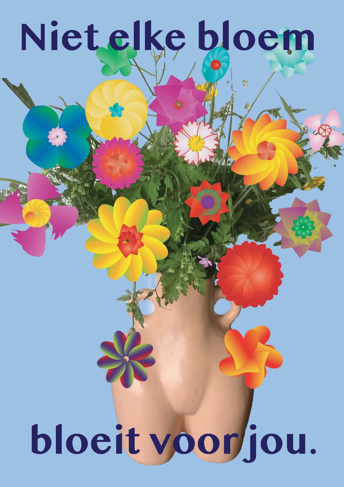
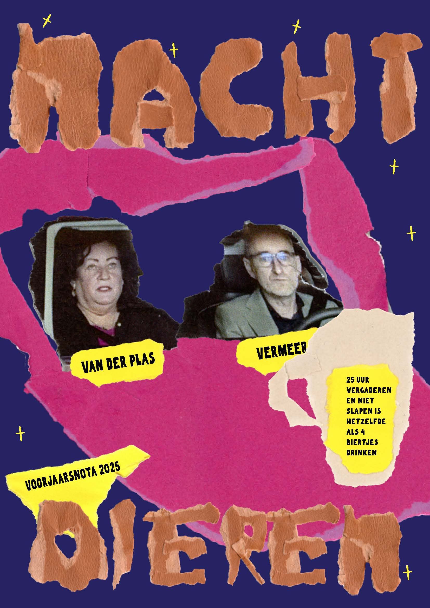
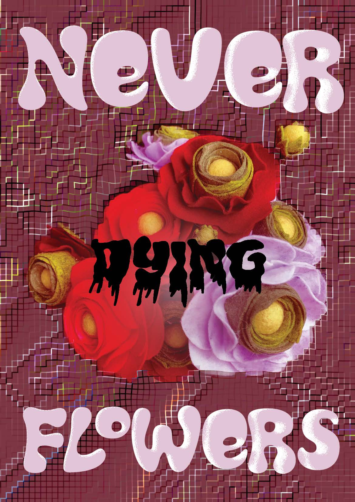
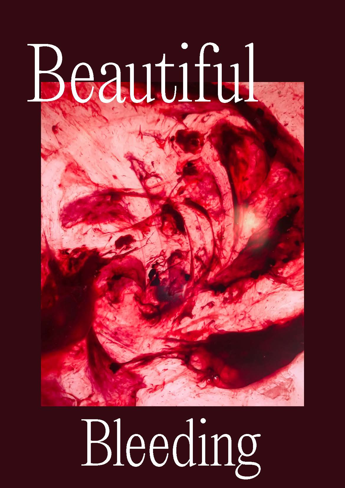
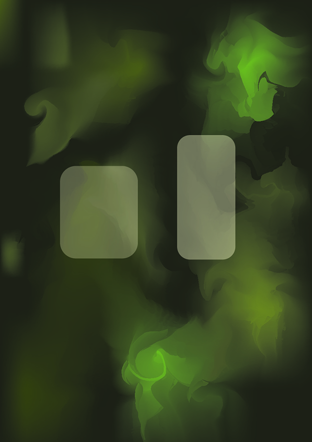
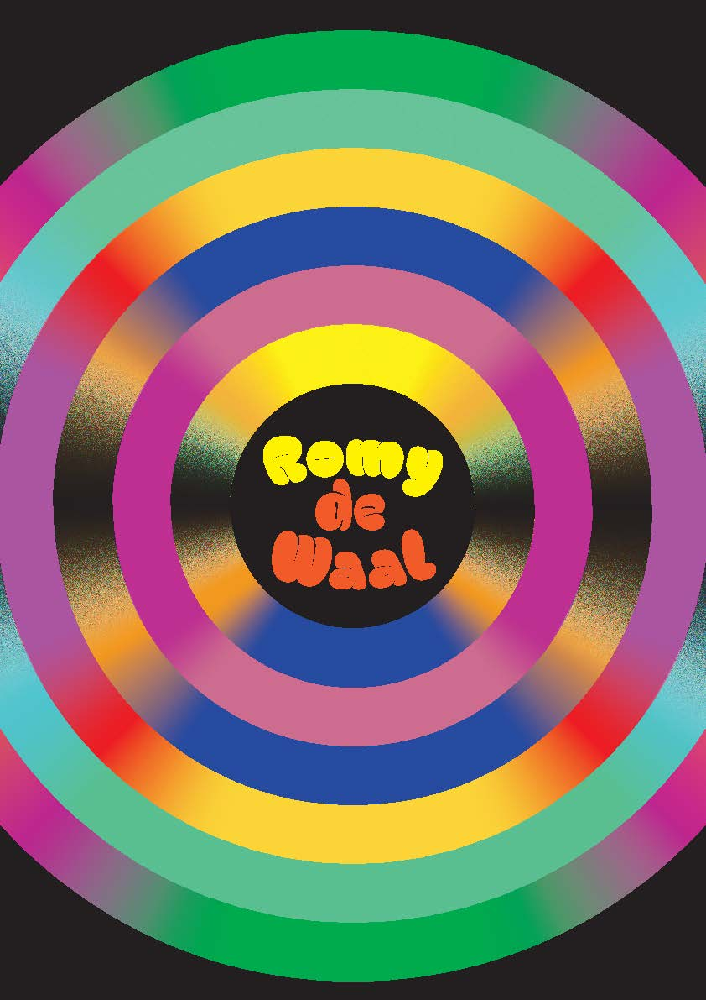
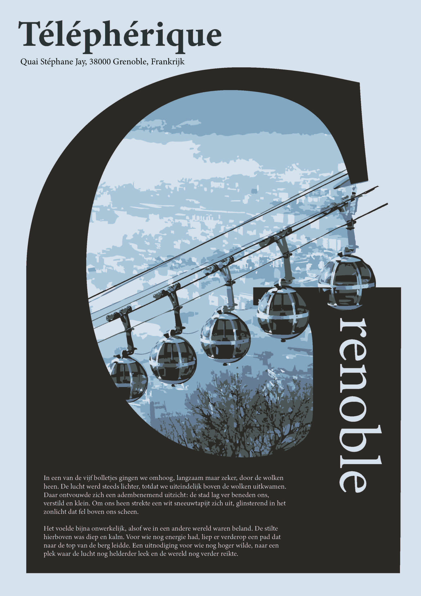
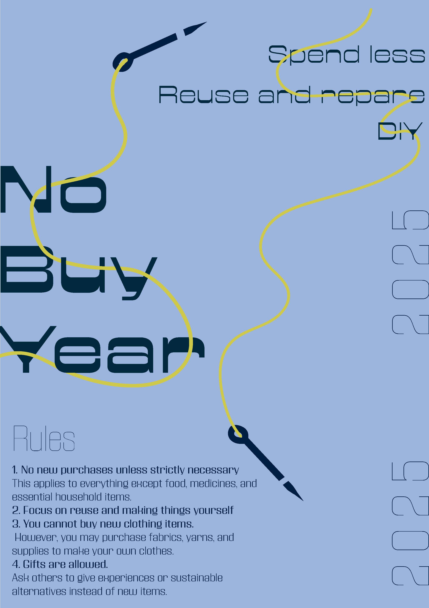
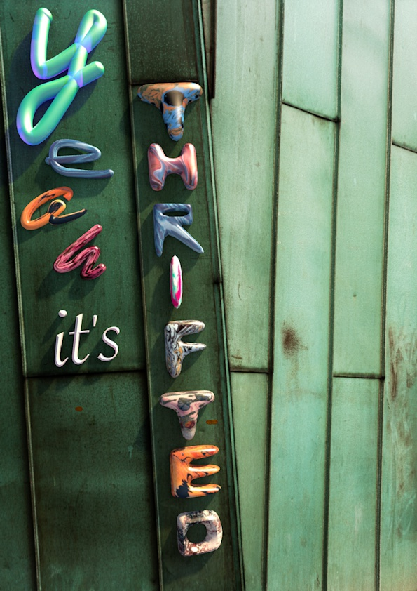
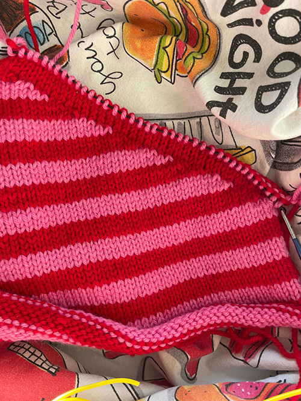
Knitting is a way for me to relax while creating something at the same time. I always carry a project with me, because you never know when a pocket of free time will appear with nothing else to do. My dream is to one day wear only hand-knitted items. Okay, maybe not everything. I’ll still keep my jeans and my underwear ;).
Before studying Communication and Multimedia Design, I pursued Photography in Antwerp, as it had been my greatest passion during high school. Back then, I spent countless hours photographing dogs in a small studio I set up in my parents’ bike shed. During my studies, I continued to take many photos, but the school environment didn’t suit me well, and over time it caused me to lose my enthusiasm for photography. Recently, however, that passion has slowly started to return.
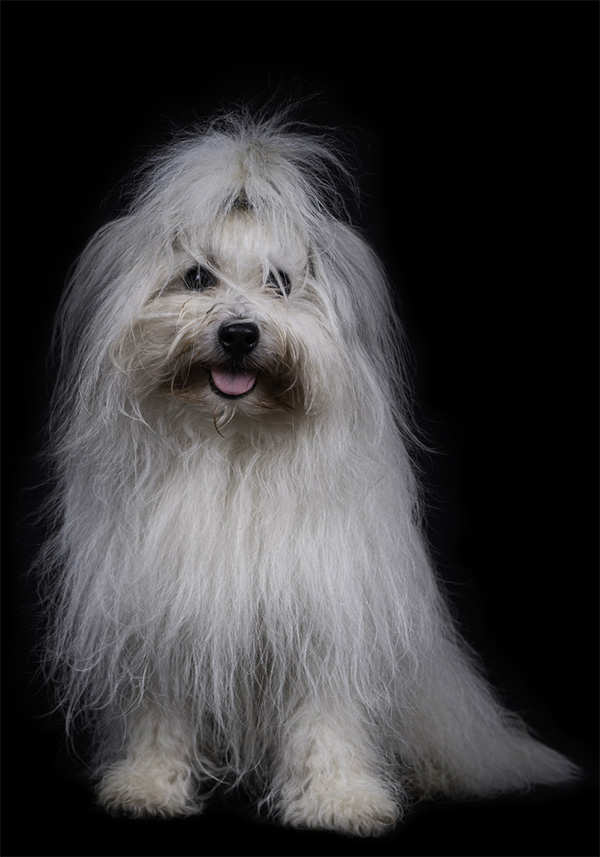
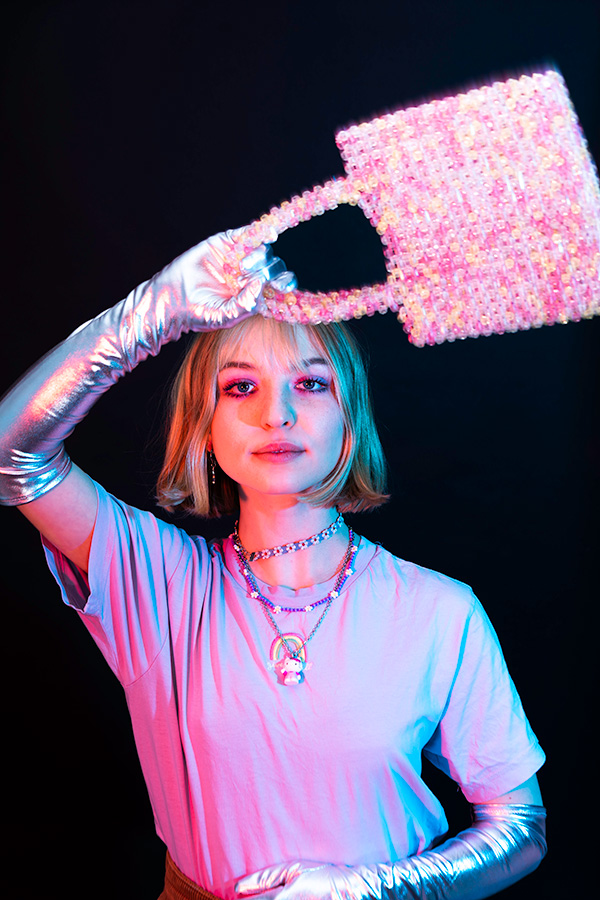
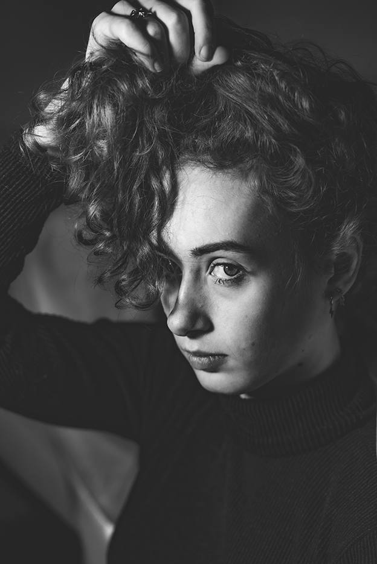
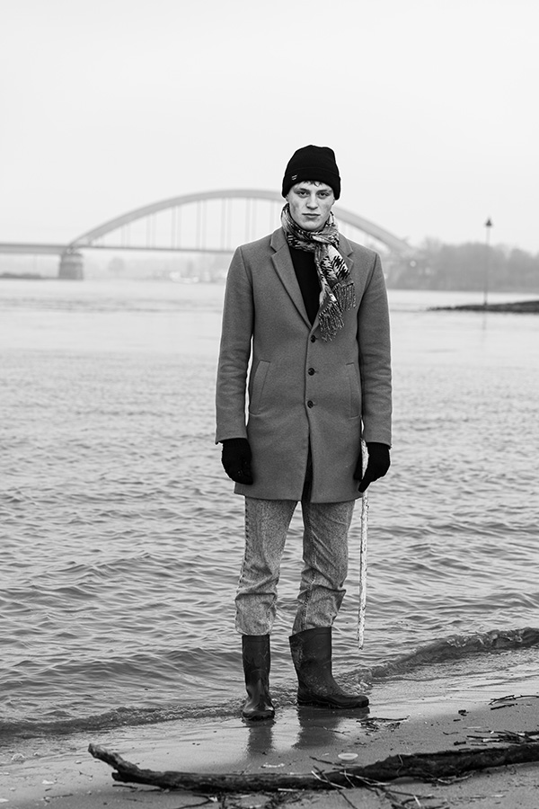
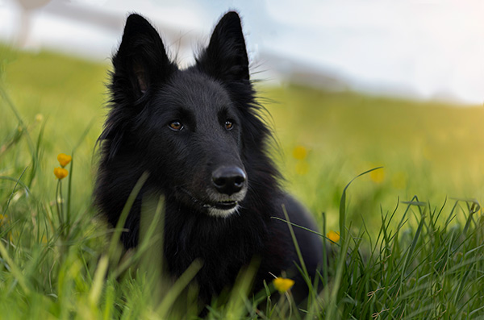
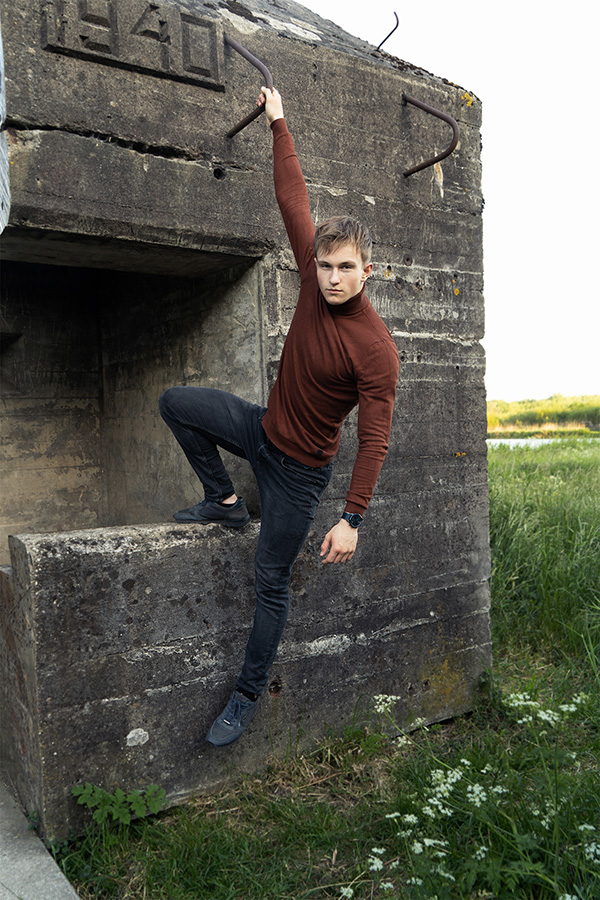
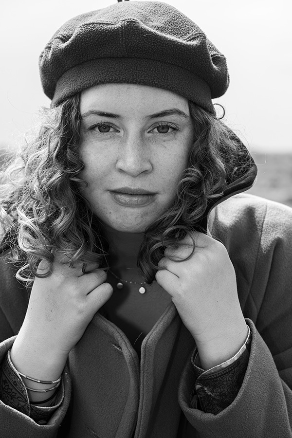